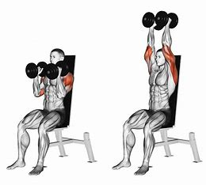
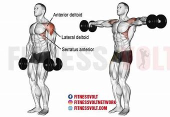
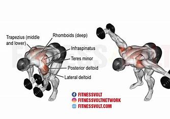
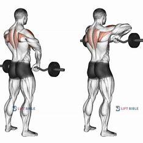
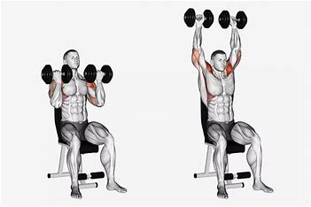
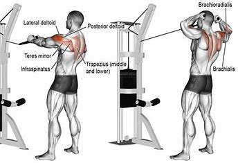

Shoulder Exercises
Shoulder Press

Description: The shoulder press is a compound exercise that targets the deltoid muscles.
It is performed by pressing a weight overhead while seated or standing.
Do it atleast 15 reps for 4 sets.
Front Dumbbell Raise
Front dumbbell raise is an isolation exercise that targets the front deltoids.
It involves lifting dumbbells in front of you with straight arms.
Do it atleast 15 reps for 4 sets.
Lateral Dumbbell Raise

Lateral dumbbell raise targets the lateral deltoids.
It involves lifting dumbbells to the sides until your arms are parallel to the ground.
Do it atleast 15 reps for 4 sets.
Bent-Over Dumbbell Reverse Fly

Bent-over dumbbell reverse fly targets the rear deltoids.
It involves bending over at the waist and lifting dumbbells to the sides with a slight bend in the elbows.
Do it atleast 15 reps for 4 sets.
Upright Row

Upright row is a compound exercise that targets the deltoids and traps.
It involves lifting a barbell or dumbbells straight up to chin level.
Do it atleast 15 reps for 4 sets.
Arnold Press

Arnold press is a variation of the shoulder press that targets all three heads of the deltoids.
It involves rotating the dumbbells as you press them overhead.
Do it atleast 15 reps for 4 sets.
Face Pull

Description: Face pull is a shoulder exercise that targets the rear deltoids, traps, and rotator cuff muscles.
It is performed by pulling a cable attachment towards your face with external rotation.
Do it atleast 15 reps for 4 sets.
Go Back